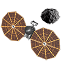
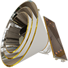
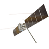
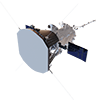

Featured Stories and Events
Lucy's Second Asteroid Flyby
April 20th, 2025SPHEREx Launch
Mission Launch March 11th, 2025Europa Clipper Mars Gravity Assist
Mars Flyby on March 1st, 2025Parker Solar Probe Perihelion
Closest Approach to the Sun